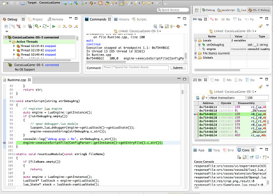
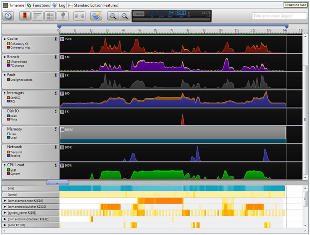

DS-5是 ARM® Development Studio 5 的简称，基于标准 Eclipse 开发环境，提供一流的窗口管理、项目管理和 C/C++ 源代码编辑工具。DS-5 将特定于 ARM 的众多功能集成到 Eclipse 平台，使得它成为功能最强大的工具链，非常适用于 ARM 软件开发。
DS-5分为旗舰版、专业版和社区版。Cocos Code IDE 获得 ARM Limited 授权，可以发布 DS-5 社区版给开发者使用。
Cocos Code IDE 从1.1.0版本开始支持 DS-5 社区版, 不过由于安装包大小原因，DS-5 由单独的安装包提供，没有集成到安装包中。下载后，请按照下面的安装方法安装到 Cocos Code IDE 中。
DS-5 社区版功能安装包:
DS-5 社区版虽然没有专业版和旗舰版功能强大，但给安卓开发者提供的帮助可不小。
支持基于ARM9、ARM11和Cortex-A (ARMv7-A)架构的处理器的安卓设备进行调试，注意某些基于安卓 2.2 版 (Froyo) 的产品尚未启用此功能。

支持简单的GPU/CPU功能分析，注意此功能只有一些特定的设备才能支持，更多信息请参考《DS-5 CE Android Streamline》。

在Cocos Code IDE中安装好DS-5后，来体验一下《用 DS-5 调试 C++ 代码》吧。